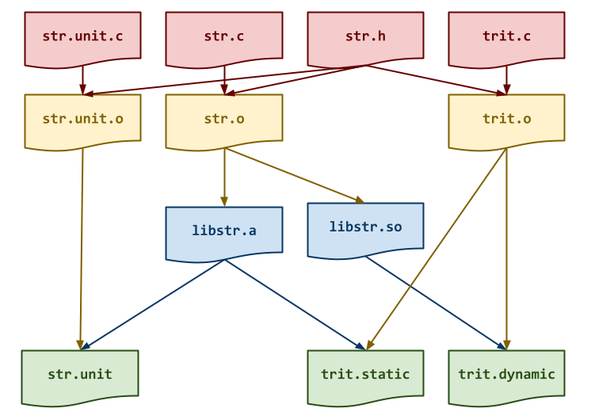

The goal of this homework assignment is to allow you to practice using
pointers, arrays, and strings in C. The first activity involves
building a string library, while the second activity requires you to use
this library to build a translation utility similar to tr named trit.
For this assignment, record your source code and any responses to the
following activities in the homework06 folder of your assignments
GitHub repository and push your work by noon, Saturday, March 21.
Activity 0: Preparation¶
Before starting this homework assignment, you should first perform a git
pull to retrieve any changes in your remote GitHub repository:
$ cd path/to/repository # Go to assignments repository
$ git switch master # Make sure we are in master branch
$ git pull --rebase # Get any remote changes not present locally
Next, create a new branch for this assignment:
$ git switch -c homework06 # Create homework06 branch and check it out
Task 1: Skeleton Code¶
To help you get started, the instructor has provided you with the following skeleton code:
# Go to homework06 folder
$ cd homework06
# Download Makefile
$ curl -LO https://pnutz.h4x0r.space/courses/cse.20289.sp26/static/txt/homework06/Makefile
# Download C skeleton code
$ curl -LO https://pnutz.h4x0r.space/courses/cse.20289.sp26/static/txt/homework06/str.c
$ curl -LO https://pnutz.h4x0r.space/courses/cse.20289.sp26/static/txt/homework06/str.h
$ curl -LO https://pnutz.h4x0r.space/courses/cse.20289.sp26/static/txt/homework06/str.unit.c
$ curl -LO https://pnutz.h4x0r.space/courses/cse.20289.sp26/static/txt/homework06/trit.c
Once downloaded, you should see the following files in your homework06 directory:
homework06
\_ Makefile # This is the Makefile for building all the assignment artifacts
\_ str.c # This is the string library C source file
\_ str.h # This is the string library C header file
\_ str.unit.c # This is the string library C unit test source file
\_ trit.c # This is the translation utility C source file
Task 2: Initial Import¶
Now that the files are downloaded into the homework06 folder, you can
commit them to your git repository:
$ git add Makefile # Mark changes for commit
$ git add *.c *.h # Mark changes for commit
$ git commit -m "Homework 06: Initial Import" # Record changes
Task 3: Unit Tests¶
After downloading these files, you can run make test to run the tests.
# Run all tests (will trigger automatic download)
$ make test
You will notice that the Makefile downloads these additional test data and scripts:
homework06
\_ str.test.py # This is the string library unit test Python script
\_ str.unit.sh # This is the string library unit test shell script
\_ trit.test.sh # This is the translation utility test shell script
You will be using these unit tests to verify the correctness and behavior of your code.
Automatic Download¶
The test scripts are automatically downloaded by the Makefile, so any
modifications you do to them will be lost when you run make again. Likewise,
because they are automatically downloaded, you do not need to add or commit
them to your git repository.
The details on what you need to implement for this assignment are described in the following sections.
Frequently Asked Questions¶
Activity 1: String Library (0.5 Points)¶
In Python, we had the luxury of strings being first-class objects with all sorts of useful methods such as str.lower or str.rstrip. Unfortunately, strings in C are just arrays that utilize the sentinel pattern for denoting the end of the strings and the standard library is a bit bare when it comes to manipulating strings.
To rectify this situation, for the first activity you are to create a string
library, libstr, which contains functions such as str_lower and
str_rstrip which implement some of the functionality present in Python
but lacking in C.
Task 0: str.h¶
The str.h file is the header file for the string utilities library, which
means it contains the function prototypes:
/* str.h: string library */
#pragma once
void str_lower(const char *s, char *w);
void str_upper(const char *s, char *w);
void str_title(const char *s, char *w);
void str_rstrip(const char *s, const char *chars, char *w);
void str_delete(const char *s, const char *chars, char *w);
void str_translate(const char *s, const char *from, const char *to, char *w);
Other programs will #include this file in order to use the functions we
will be implementing in this library.
Note: For this task, you do not need to modify this file. Instead, you should review it and ensure you understand the provided code.
Task 1: Makefile¶
The Makefile contains all the rules or recipes for building the
project artifacts (e.g. libstr.a, libstr.so, etc.):
CC= gcc
CFLAGS= -Wall -g -std=gnu99 -fPIC
LD= gcc
LDFLAGS= -L.
LIBS= -lstr
AR= ar
ARFLAGS= rcs
TARGETS= libstr.so libstr.a trit.dynamic trit.static
all: $(TARGETS)
#-------------------------------------------------------------------------------
# TODO: Add rules for libstr.a libstr.so
#-------------------------------------------------------------------------------
str.o:
libstr.so:
libstr.a:
#-------------------------------------------------------------------------------
# TODO: Add rules for trit.dynamic trit.static
#-------------------------------------------------------------------------------
trit.o:
trit.dynamic:
trit.static:
#-------------------------------------------------------------------------------
# DO NOT MODIFY BELOW
#-------------------------------------------------------------------------------
...
For this task, you will need to add rules for building the static library
libstr.a and the shared library libstr.so. Be sure to have a recipe
for any intermediate object files that both libraries require as shown in
the DAG below:

Makefile Variables¶
You must use the CC, CFLAGS, LD, LDFLAGS, AR, and ARFLAGS
variables when appropriate in your rules. You should also consider
using automatic variables such as $@ and $< as well.
Once you have a working Makefile, you should be able to run the following commands:
# Build all TARGETS
$ make
gcc -Wall -g -std=gnu99 -fPIC -c -o str.o str.c
gcc -L. -shared -o libstr.so str.o
ar rcs libstr.a str.o
# Run str library tests
$ make test-libstr
Testing libstr.so ...
test_00_str_lower (__main__.StrTestCase.test_00_str_lower) ... FAIL
test_01_str_upper (__main__.StrTestCase.test_01_str_upper) ... FAIL
test_02_str_title (__main__.StrTestCase.test_02_str_title) ... FAIL
test_03_str_rstrip (__main__.StrTestCase.test_03_str_rstrip) ... FAIL
test_04_str_delete (__main__.StrTestCase.test_04_str_delete) ... FAIL
test_05_str_translate (__main__.StrTestCase.test_05_str_translate) ... FAIL
Score 1.11 / 6.00
Grade 0.18 / 1.00
Status Failure
...
# Remove generated artifacts
$ make clean
Note: The tests will fail if you haven't implemented the string library.
Compiler Warnings¶
You must include the -Wall flag in your CFLAGS when you compile. This
also means that your code must compile without any warnings, otherwise
points will be deducted.
Task 2: str.c¶
The str.c file contains the C implementation for the string library.
For this task, you will need to implement the following functions:
-
void str_lower(const char *s, char *w)This function converts all the letters in
sto lowercase (e.g.s.lower()in Python) and stores the result inw.Hint: Use tolower to convert a
charto lowercase.void str_upper(const char *s, char *w)This function converts all the letters in
sto uppercase (e.g.s.upper()in Python) and stores the result inw.Hint: Use toupper to convert a
charto uppercase.void str_title(const char *s, char *w)This function converts all the letters in
sto titlecase (e.g.s.title()in Python) and stores the result inw.Hint: Anything that is not a letter (ie. isalpha) is a word boundary.
void str_rstrip(const char *s, const char *chars, char *w)This function strips any of the specified
charsfrom the back ofs(e.g.s.rstrip(chars)in Python) and stores the result inw. IfcharsisNULL, then all trailing whitespace is stripped.Hint: After copying the string
stow, work backwards until you reach a character that should not be stripped. Construct and use a lookup table to efficiently determine if a character should be stripped.void str_delete(const char *s, const char *chars, char *w)This function deletes all the letters in
charsfroms(e.g.s.translate({c: None for c in chars})in Python) and stores the result inw.Hint: Construct and use a lookup table to efficiently determine if a character should be copied from
stow.void str_translate(const char *s, const char *from, const char *to, char *w)This function translates the letters in
susing the mapping provided byfromandto(e.g.s.translate(string.maketrans(from, to))in Python).Hint: Construct and use a lookup table to efficiently determine if a character should substituted for another character while copying from
stow.Requirements¶
-
The functions above must not modify the original string
sand must store the result in the providedwbuffer. -
You are not allowed to allocate any additional temporary strings as scratch space. Moreover, you cannot use the heap or dynamic memory allocation.
-
The functions above must run in
O(n)(ie. linear) time and useO(1)(ie. constant) space. -
The functions above must only use pointers when iterating through a string or accessing individual characters in a string. That is, you cannot index into a string:
/* Allowed: Iterate through string using pointers */ for (char *c = s; *c; c++) putc(*c, stdout); /* Forbidden: Iterate through string using array index */ for (size_t i = 0; i < strlen(s); i++) { putc(s[i], stdout); // Not allowed putc(*(s + i), stdout); // Also not allowed }You cannot use any functions provided by
string.h, includingstrlen,strchr, orstrcpy. You must perform all operations manually using pointers.Task 3: Testing¶
As you implement the functions in
str.c, you should use thestr.test.pyandstr.unit.shscripts to test each function:# Build test artificats and run test scripts $ make test-libstr ...This will run two different test scripts:
-
str.test.py: This is a Python unit test script that uses yourlibstr.so. -
str.unit.sh: This is a shell unit test script that uses yourlibstr.awithstr.unit.
You can run each manually:
# Run Python unit test script manually $ ./str.test.py -v Testing libstr.so ... test_00_str_lower (__main__.StrTestCase.test_00_str_lower) ... ok test_01_str_upper (__main__.StrTestCase.test_01_str_upper) ... ok test_02_str_title (__main__.StrTestCase.test_02_str_title) ... ok test_03_str_rstrip (__main__.StrTestCase.test_03_str_rstrip) ... ok test_04_str_delete (__main__.StrTestCase.test_04_str_delete) ... ok test_05_str_translate (__main__.StrTestCase.test_05_str_translate) ... ok Score 6.00 / 6.00 Grade 1.00 / 1.00 Status Success ---------------------------------------------------------------------- Ran 6 tests in 0.001s OK # Run Shell unit test script manually $ ./str.unit.sh Testing libstr.a ... str_lower ... Success str_upper ... Success str_title ... Success str_rstrip ... Success str_delete ... Success str_translate ... Success -------------------- Score 6.00 / 6.00 Grade 1.00 / 1.00 Status SuccessTo use Python to interactively test a function, you can do something like the following:
# Import ctypes package >>> import ctypes # Load string utilies shared library >>> libstr = ctypes.CDLL('./libstr.so') # Create string buffers >>> s = ctypes.create_string_buffer(b'Hello, World!') >>> w = ctypes.create_string_buffer(1<<10) # Call str_lowercase function >>> libstr.str_lower(s, w) # View resulting value >>> w.value b'hello, world!'To debug your string library in C, you can use [gdb] on
str.unit# Start gdb on str.unit $ gdb ./str.unit (gdb) run 0 # Run str.unit with the "0" command line argument (ie. str_lower) ...You can also use valgrind to check for memory errors:
# Check for memory errors on str_lower test case $ valgrind --leak-check=full ./str.unit 0Iterative Development¶
You should practice iterative development. That is, rather than writing a bunch of code and then debugging it all at once, you should concentrate on one function at a time and then test that one thing at a time. The provided unit tests allow you to check on the correctness of the individual functions without implementing everything at once. Take advantage of this and build one thing at a time.
Activity 2: Trit (0.3 Points)¶
Once you have a working string library, you are to complete the
trittranslation utility:$ ./trit.static -h # Display usage Usage: ./trit SET1 SET2 Post Translation filters: -l Convert to lowercase -u Convert to uppercase -t Convert to titlecase -s Strip trailing whitespace -d Delete letters in SOURCE $ echo " Hello world " | ./trit.static # Just echo input Hello world $ echo " Hello world " | ./trit.static -l # Lowercase hello world $ echo " Hello world " | ./trit.static -u # Uppercase HELLO WORLD $ echo " Hello world " | ./trit.static -t # Titlecase Hello World $ echo " Hello world " | ./trit.static -s # Strip traling whitespace Hello world $ echo " Hello world " | ./trit.static -d aeio # Delete Hll wrld $ echo " Hello world " | ./trit.static aeio 4310 # Translate H3ll0 w0rld $ echo " Hello world " | ./trit.static -s -l aeio 4310 # Translate, strip, and lowercase h3ll0 w0rldThe
tritutility must use the corresponding functions from the string utilities library you created above to translate and filter the input text.Task 1:
Makefile¶The first task is to modify the
Makefileto include additional rules for the following targets:-
trit.static: This is a static executable oftrit.c. -
trit.dynamic: This is a dynamic executable oftrit.c.
Be sure to add any rules for any intermediate object files.
Once you have a working
Makefile, you should be able to run the following commands:# Build all TARGETS $ make gcc -Wall -g -std=gnu99 -fPIC -c -o str.o str.c gcc -L. -shared -o libstr.so str.o ar rcs libstr.a str.o gcc -Wall -g -std=gnu99 -fPIC -c -o trit.o trit.c gcc -L. -o trit.dynamic trit.o -lstr gcc -L. -static -o trit.static trit.o -lstr # Run all tests $ make test test_00_str_lower (__main__.StrTestCase.test_00_str_lower) ... ok test_01_str_upper (__main__.StrTestCase.test_01_str_upper) ... ok test_02_str_title (__main__.StrTestCase.test_02_str_title) ... ok test_03_str_rstrip (__main__.StrTestCase.test_03_str_rstrip) ... ok test_04_str_delete (__main__.StrTestCase.test_04_str_delete) ... ok test_05_str_translate (__main__.StrTestCase.test_05_str_translate) ... ok ---------------------------------------------------------------------- Ran 6 tests in 0.000s OK Testing libstr.so ... Score 6.00 / 6.00 Grade 1.00 / 1.00 Status Success Testing libstr.a ... str_lower ... Success str_upper ... Success str_title ... Success str_rstrip ... Success str_delete ... Success str_translate ... Success -------------------- Score 6.00 / 6.00 Grade 1.00 / 1.00 Status Success Testing trit utility... trit -h ... Success trit ... Success trit aeio 4310 ... Success trit blue gold ... Success trit -l aeio 4310 ... Success trit -u blue gold ... Success trit -t ... Success trit -s swift snake ... Success trit -d aeio ... Success trit -l -u aeio 4310 ... Success trit -l -s aeio 4310 ... Success trit -l -d gdbye ... Success trit -s -t aeio 4310 ... Success trit -u -d antm ... Success -------------------- Score 14.00 / 14.00 Grade 1.00 / 1.00 Status Success ... # Remove generated artifacts $ make cleanTask 2:
trit.c¶The
trit.cfile is contains the C implementation of the translation utility described above:/* trit.c: translation utility */ #include "str.h" #include <stdio.h> #include <stdlib.h> #include <string.h> /* Constants */ enum { LOWER = 1<<1, UPPER = 0, // TODO: Modify TITLE = 0, // TODO: Modify STRIP = 0, // TODO: Modify DELETE = 0, // TODO: Modify }; /* Functions */ void usage(int status) { fprintf(stderr, "Usage: trit SET1 SET2\n\n"); fprintf(stderr, "Post Translation filters:\n\n"); fprintf(stderr, " -l Convert to lowercase\n"); fprintf(stderr, " -u Convert to uppercase\n"); fprintf(stderr, " -t Convert to titlecase\n"); fprintf(stderr, " -s Strip trailing whitespace\n"); fprintf(stderr, " -d Delete letters in SET1\n"); exit(status); } void translate_stream(FILE *stream, const char *set1, const char *set2, int flags) { // TODO } /* Main Execution */ int main(int argc, char *argv[]) { // TODO: Parse command line arguments // TODO: Translate standard input return EXIT_SUCCESS; }In addition to implementing command line parsing in the
mainfunction and you will need to implement thetranslate_streamfunction:-
void translate_stream(FILE *stream, const char *set1, const char *set2, int flags)This function reads one line at a time from the
streamand performs either string deletion or string translation based on the values inset1andset2. Any post processing is controlled byflags, which is a bitmask that specifies which filters to apply (ie. lower, upper, title, strip).Note: You should apply the filters in the order specified above. Overall, the flow for each line of input should be: delete or translate, apply filters, and then print result.
Hint: To handle the
flagsbitmask, you should have an enumerate for each filter, where each filter corresponds to a particular bit field:enum { /* Define Flags */ LOWER = 1<<1, ... }; flags |= LOWER; /* Set a Flag */ if (flags & LOWER) { /* Check a Flag */ ... }If you need a review of
enum, checkout Enumerated Types from Dive Into Systems.Task 3: Testing¶
To test your
tritutility, you can use the providedtrit.test.shscript:# Build artifacts $ make test-trit Testing trit utility... trit -h ... Success trit ... Success trit aeio 4310 ... Success trit blue gold ... Success trit -l aeio 4310 ... Success trit -u blue gold ... Success trit -t ... Success trit -s swift snake ... Success trit -d aeio ... Success trit -l -u aeio 4310 ... Success trit -l -s aeio 4310 ... Success trit -l -d gdbye ... Success trit -s -t aeio 4310 ... Success trit -u -d antm ... Success -------------------- Score 14.00 / 14.00 Grade 1.00 / 1.00 Status Success # Run test script manually $ ./trit.test.sh Testing trit utility...Alternatively, you can both build the artifacts and run the test script by doing the following:
# Build and run test scripts $ make test-trit ...Valgrind¶
The
trit.test.shshell script will use the valgrind tool to verify that your program does not contain any memory errors such as memory leaks, uninitialized values, or invalid accesses.You can run valgrind manually by doing:
$ echo " Hello World" | valgrind --leak-check=full ./trit.dynamic ==28627== Memcheck, a memory error detector ==28627== Copyright (C) 2002-2015, and GNU GPL'd, by Julian Seward et al. ==28627== Using Valgrind-3.12.0 and LibVEX; rerun with -h for copyright info ==28627== Command: ./str-dynamic ==28627== Hello World ==28627== ==28627== HEAP SUMMARY: ==28627== in use at exit: 0 bytes in 0 blocks ==28627== total heap usage: 2 allocs, 2 frees, 5,120 bytes allocated ==28627== ==28627== All heap blocks were freed -- no leaks are possible ==28627== ==28627== For counts of detected and suppressed errors, rerun with: -v ==28627== ERROR SUMMARY: 0 errors from 0 contexts (suppressed: 0 from 0)Note: You should run valgrind on the dynamic executable rather than the static executable. Likewise, valgrind may behave differently on macOS than it does on Linux, so beware of spurious errors on the former.
Activity 3: Quiz (0.2 Points)¶
Once you have completed all the activities above, you are to complete the following reflection quiz:
As with Reading 01, you will need to store your answers in a
homework06/answers.jsonfile. You can use the form above to generate the contents of this file, or you can write the JSON by hand.To test your quiz, you can use the
check.pyscript:$ ../.scripts/check.py Checking homework06 quiz ... Q01 4.00 / 4.00 Q02 3.00 / 3.00 Q03 4.00 / 4.00 Q04 2.00 / 2.00 Q05 7.00 / 7.00 -------------------- Score 20.00 / 20.00 Grade 1.00 / 1.00 Status SuccessSubmission¶
To submit your assignment, please commit your work to the
homework06folder of yourhomework06branch in your assignments GitHub repository. Yourhomework06folder should only contain the following files:Makefileanswers.jsonstr.cstr.hstr.unit.ctrit.c
Note: You do not need to commit the test scripts because the
Makefileautomatically downloads them.#----------------------------------------------------------------------- # Make sure you have already completed Activity 0: Preparation #----------------------------------------------------------------------- ... $ git add Makefile # Mark changes for commit $ git add str.c # Mark changes for commit $ git add str.h # Mark changes for commit $ git commit -m "Homework 06: str" # Record changes ... $ git add Makefile # Mark changes for commit $ git add trit.c # Mark changes for commit $ git commit -m "Homework 06: trit" # Record changes ... $ git add answers.json # Mark changes for commit $ git commit -m "Homework 06: Quiz" # Record changes $ git push -u origin homework06 # Push branch to GitHubAcknowledgments¶
If you collaborated with any other students, or received help from TAs or AI tools on this assignment, please record this support in the
README.mdin thehomework06folder and include it with your Pull Request.Graders¶
Once you have committed your work and pushed it to GitHub, remember to create a pull request and assign it to the appropriate teaching assistant from the Reading 06 TA List.
Note: this list changes each week, so be sure to consult the appropriate list for each assignment.